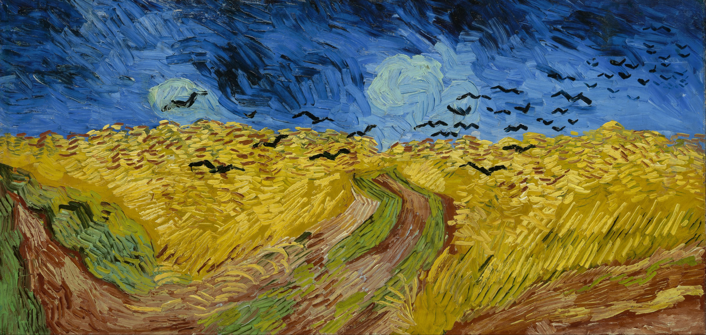
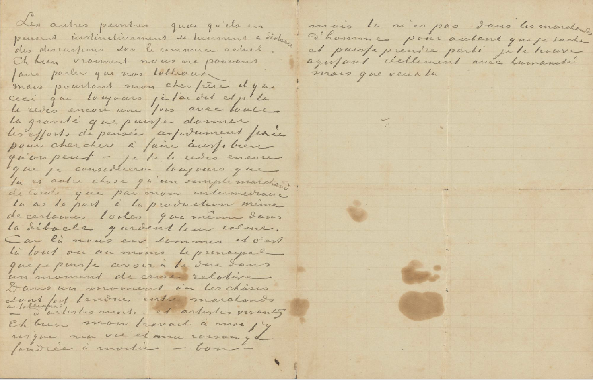

| Autore: | Vincent Van Gogh |
| Tipo: | Lettera |
| Data: | 23 luglio 1890 linea del tempo |
| Luogo: | Auvers-sur-Oise mappa dei luoghi |
| Ubicazione: | Amsterdam Van Gogh Museum |
| Tecnica: | Inchiostro su carta |
| Formato: | 21.8cm x 34cm |
| Soggetti: | malattia; lavoro; riflessione |
| Relazione: |  |
Ultima lettera dell'artista. Il 27 luglio tenterà il suicidio in un campo di grano e rimarrà ferito, tornerà alla sua locanda, dove perderà la vita due giorni dopo.

Mio caro fratello,
grazie della tua cara lettera e del biglietto di 50 fr. che conteneva. Vorrei scriverti a proposito di tante cose, ma ne sento l'inutilità. Spero che avrai trovato quei signori ben disposti nei tuoi riguardi. Che tu mi rassicuri sulla tranquillità della tua vita familiare non valeva la pena; credo di aver visto il lato buono come il suo rovescio - e del resto sono d'accordo che tirar su un marmocchio in un appartamento al quarto piano è una grossa schiavitù sia per te che per Jo. Poiché va tutto bene, che è ciò che conta, perché dovrei insistere su cose di minima importanza. In fede mia, prima che ci sia la possibilità di chiacchierare di affari a mente più serena passerà molto tempo. Ecco l'unica cosa che in questo momento ti posso dire, e questo da parte mia l'ho constatato con un certo spavento e non l'ho ancora superato. Ma per ora non c'è altro. Gli altri pittori, checché ne pensino, si tengono istintivamente lontani dalle discussioni sul commercio attuale.
E poi è vero, noi possiamo far parlare solo i nostri quadri.
Eppure, mio caro fratello, c'è questo che ti ho sempre detto e che ti ripeto ancora una volta con tutta la serietà che può provenire da un pensiero costantemente teso a cercare di fare il meglio possibile, te lo ripeto ancora che ti ho sempre considerato qualcosa di più di un semplice mercante di Corot, e che tu per mezzo mio hai partecipato alla produzione stessa di alcuni quadri, che, pur nel fallimento totale, conservano la loro serenità. Perché siamo a questo punto, e questo è tutto o per lo meno la cosa principale che io possa dirti in un momento di crisi relativa. In un momento in cui le cose fra i mercanti di quadri di artisti morti e di artisti vivi sono molto tese.
Ebbene, nel mio lavoro ci rischio la vita e la mia ragione vi si è consumata per metà - e va bene - ma tu non sei fra i mercanti di uomini, per quanto ne sappia, e puoi prendere la tua decisione, mi sembra, comportandoti realmente con umanità. Ma che cosa vuoi mai?
Credits (obliged to state): Van Gogh Museum, Amsterdam (Vincent van Gogh Foundation)